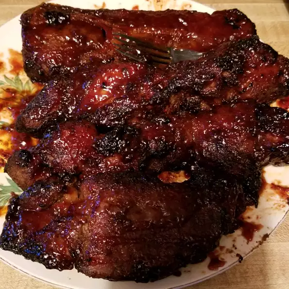

Babyback Ribs

Who would have thought you can prep and cook your ribs in less than an hour? Well now you can using an air fryer. Quick and easy for a weeknight dinner.
Ingredients
1 tablespoon liquid smoke flavoring
Steps
1. Preheat the air fryer to 400 degrees F (200 degrees C).
2. Wash and dry potatoes. Trim edges to make a flat surface on both ends.
3. Combine extra-virgin olive oil and salad dressing mix in a large bowl. Add potatoes and toss until potatoes are well coated. Place in a single layer into the air fryer basket. Cook in batches if necessary.
4. Air fry until potatoes are golden brown, 5 to 7 minutes. Flip potatoes and air fry for an additional 2 to 3 minutes. Season with salt and pepper.